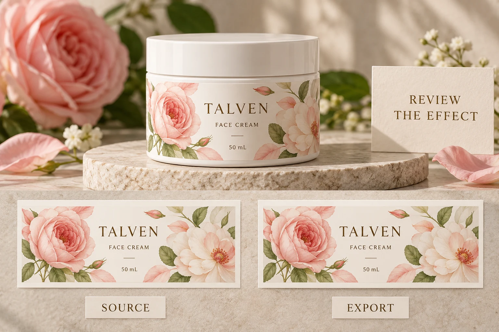

Separate an artwork effect from a clear material
The word transparent can describe two different things in a label conversation. The substrate may be clear, allowing the bottle to contribute to appearance. Separately, the digital artwork may contain opacity effects, masks, shadows or overlapping objects.
An opaque white label can still use a digital transparency effect in its artwork. A clear-film design can also contain objects without that kind of effect. Identifying the material does not establish what the file contains or how its effects should be exported.
Use the clear cosmetic label guide for the material and filled-pack appearance discussion. Here the decision concerns the artwork's output route, not whether the bottle should remain visible through the label.
Ask which parts of the design need attention
Have the designer identify the relevant effect and its location. Record what the brand expects to see: the intended overlap, shadow, softened edge or relationship between artwork elements. A question about a named area is easier for prepress to resolve than a request to make the file safe.
Adobe's transparent-artwork guidance describes flattening as dividing artwork into vector and raster regions and explains that preservation depends on format. It also notes that flattening cannot be undone after the saved result. Those distinctions justify a deliberate export review, not an automatic instruction for every file.
Keep an identifiable editable master before making output changes. Do not overwrite the only useful source and later discover that another export or correction is needed.
Obtain the receiving requirements before choosing settings
Ask the printer for its current accepted format or preset and any relevant instructions for the intended process. Have the designer confirm how the source will be exported against that requirement. A familiar preset from another supplier is a starting question, not authority for this job.
This guide does not prescribe a universal PDF version, rasterisation resolution or flattening preset. A workflow capable of retaining live transparency and one requiring a prepared flattened output can need different handling. The receiving prepress team should confirm the applicable route.
Record the requirement reference with the file. If the printer requests a change, identify what changes and why, then produce a new export with its own revision. Do not allow two files with different preparation to circulate as an unexplained final version.
Review affected details in the exact export
Ask the designer and prepress reviewer to inspect the relevant output file, including areas where effects interact with fine detail, text or other print objects. Compare the intended appearance with the actual export, not only with a screenshot of the source application.
Adobe flags that affected fine strokes or small text can appear different under some flattening arrangements. Treat that as a review question for the particular artwork. It is not evidence that the current label has a defect or that every transparency effect is unsuitable for print.
If a problem is found, identify the object and observation. Have the technical parties choose a correction and check the resulting export again. Avoid fixing an unfamiliar edge by repeatedly changing settings without retaining which file produced which result.

Keep related checks separate enough to act on
Overprint attributes and transparency effects can interact in a production workflow, but they are not interchangeable names for one file property. The overprint review guide addresses intended ink-object behaviour. Ask prepress to consider the relevant interactions rather than treating a check of one property as approval of all others.
Likewise, an export review does not prove source-image detail or font portability. Use the image-resolution guide and PDF font checklist where those questions arise. Keep them attached to the same released file so separate checks do not accidentally approve different revisions.
The point is not to multiply paperwork. It is to make a reported difference specific enough that the right person can correct it.
Use a short source-to-output record
Bring the source, approved appearance reference and receiving instructions to one review. Work from the affected area toward the actual output file.
| Field | What to record | Release question |
|---|---|---|
| Effect | Object location and intended visual relationship | What must survive the export? |
| Source | Controlled editable master and revision | Can another correction be made safely? |
| Receiving route | Accepted format or preset reference | Has prepress confirmed this workflow? |
| Export | Exact file name or controlled ID | Is this the file being checked? |
| Observation | Specific difference, or no issue found within scope | What still needs resolving? |
| Correction | Changed object or export and replacement ID | Was the result checked again? |
| Acceptance | Reviewer and acknowledged output | Which file is released? |
Leave the release pending if the receiving route is unknown or an important effect remains unresolved. A smooth preview on one computer does not settle those questions.
Allow either output route when the job supports it
A hypothetical simple design with no relevant transparency effect may need little additional review under the printer's accepted workflow. Flattening a file simply to make it sound more professional adds no demonstrated value.
A more complex design with overlaps needs its affected objects and output route checked. Retaining an editable source and obtaining a suitable export can be sensible whether the agreed production route preserves transparency or requires preparation for a different workflow.
For custom cosmetic labels, provide the container, dimensions, quantity by design and current artwork. Mark the effect that needs clarification and include any printer-supplied output requirement.
Use the inquiry form to prepare your message; send files through email or WhatsApp. The form does not upload attachments. Ask for an acknowledged output route and reviewed file before replacing a clear technical question with flatten everything.